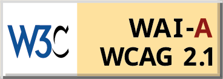

What is the Web Content Accessibility Guidelines (WCAG)?
- These are recommended standards for created accessable websites created by the World Wide Web Consortium (W3C)
- The first set of standards WCAG 1.0 came out in 1999 and focused on fourteen different guidelines
- WCAG 2.0 was released in 2008 and it was based on four different principles: perceivable, operable, understandable, robust
- WCAG 2.1 was released in 2018. It adds additional success criteria to the 2.0 standard.
The Four Principles of the WCAG
Click on each principle to see their WCAG 2.1 standards
W3C 2.1 Certification Levels
-  Level A WCAG 2.1 certification logo
 Level Double A WCAG 2.1 certification logo
Level Double A WCAG 2.1 certification logo Level Triple A WCAG 2.1 certification logo
Level Triple A WCAG 2.1 certification logo
Note that this site has not been tested for WCAG complience and is only using these images do demonstrate what these logos look like
https://www.w3.org/WAI/standards-guidelines/wcag/conformance-logos/